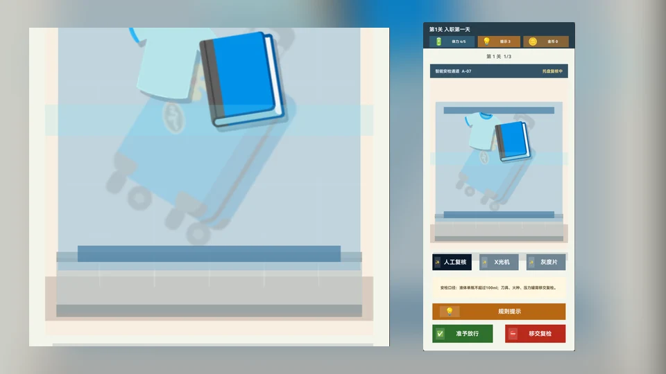

行李安检 · 观察解谜
传送带又送来一只行李。换个角度看看，里面到底装了个啥？

你是值班安检员。同一只包可以用人工复核、X 光机和灰度片检查。对照本关规则，决定准予放行还是移交复检。
人工复核、X 光和灰度片都围绕同一件行李。遇到拿不准的物品，玩家可以来回切换，对照外观和轮廓再作决定。
刀具、火种和压力罐各有对应的关卡规则，液体还要核对 100 毫升限制。玩家既要看出装了什么，也要判断它是否符合当关条件。